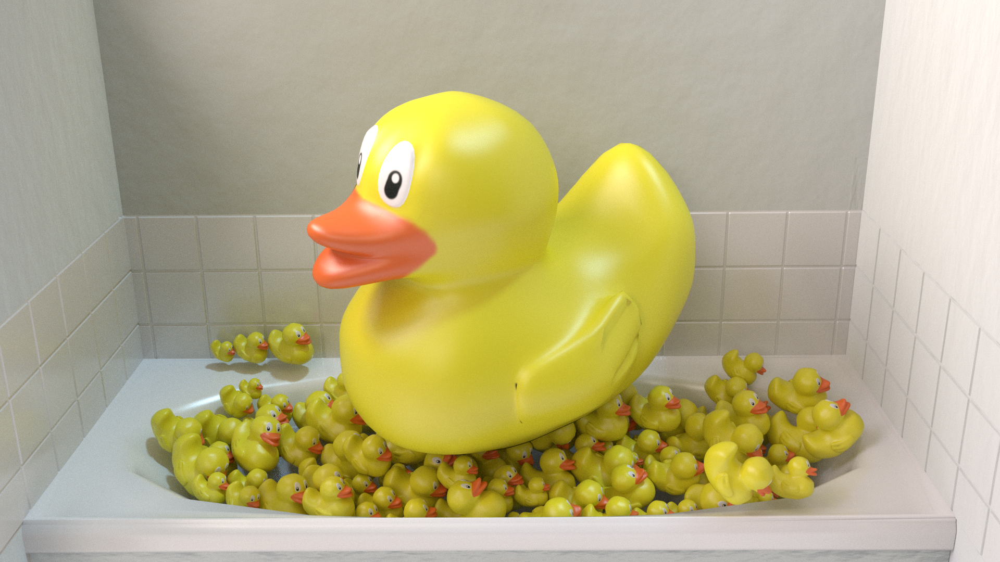
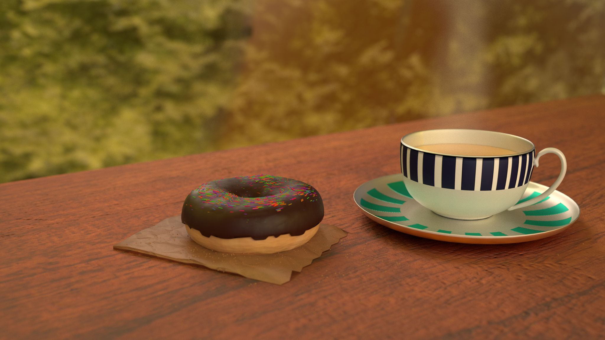

The reddit monthly contest for July was Duck! themed. Thus of course I made ducks falling from the sky
24/07/2016
Reddit's theme contest for June was to texture a bottle and I made a coke bottle falling out of the sky
23/06/2016
My first animation without a tutorial. Piglet loses his balloon then has to climb a tree to get it.
22/02/2016


A science fiction version of what a mechanical heart could look like.
28/06/2015